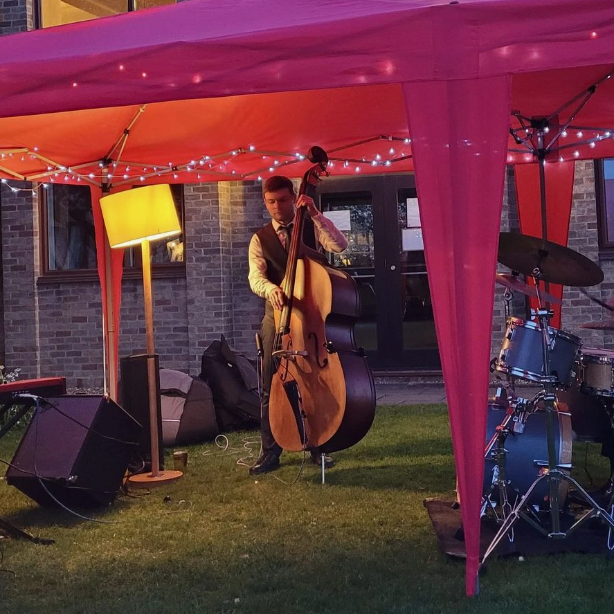

Chris Diamand
Guitar and bass player
Chris is a versatile and experienced multi-instrumentalist based just north of London. In the past he's played everything from Bach to the Arctic Monkeys, but recently most of his work has been jazz, funk, neo-soul, or pop, usually on electric bass or guitar, although he plays upright bass and piano as well.
Chris' current bands include a jazz organ trio, LCL.trio, and function bands The Elements and The Messengers.